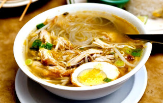

|
|
Cara Memasak Soto Ayam
- Haluskan kunyit, kemiri, jahe, bawang merah, dan bawang putih. Lalu tambahkan merica dan garam.
- Siapkan penggorengan dengan api sedang, lalu tumis bumbu yang sudah dihaluskan dengan minyak goreng.
- Masukkan Daun jeruk, daun salam, serai, dan lengkuas. Tumis bumbu hingga harum.
- Siapkan panci untuk merebus air. Rebus air hingga mendidih. Setelah air mendidih kemudian masukkan bumbu yang sudah ditumis ke dalam panci.
- Masukkan ayam yang sudah dibersihkan ke dalam kuah soto yang sedang direbus. Rebus kuah hingga mendidih dan ayam hingga hingga matang.
- Cicipi kuahnya, jika kurang sedap bisa ditambahkan garam dan merica sesuai selera Anda.
- Keluarkan ayam dari dalam kuah, pisahkan daging ayam dengan tulangnya. Sisihkan daging ayam dan masukkan kembali tulang ayam ke dalam kuah.
- Masukkan daun bawang yang sudah diiris halus ke dalam kuah.
- Goreng hingga kering kentang yang sudah diiris tipis-tipis. Sisihkan dalam wadah tertutup.
- Ayam yang sudah di rebus dalam kuah kemudian goreng hingga berwarna kecoklatan setelah itu suwir ayam kecil-kecil.
- Siapkan wadah bersih berupa mangkuk untuk menyajikan soto.
- Soto ayam bisa dihidangkan dengan nasi atau soto. Taruh terlebih dahulu nasi atau lontong ke dalam mangkuk.
- Letakkan kol yang sudah diiris, tauge, kentang goreng, soun, 1 irisan tomat, telur, dan daging ayam.
- Tuangkan kuah soto secukupnya ke dalam mangkuk.
- Taburkan bawang goreng ke dalam mangkuk dan taruh irisan jeruk nipis di atasnya.
- Soto ayam siap dihidangkan. Lengkapi soto dengan menghidangkan pula kecap manis, sambal, dan kerupuk.
Bahan
- Ayam 1 ekor
- Kol 200 g, iris tipis
- Tauge 200 g, bersihkan dan kukus hingga matang
- Kentang 4 buah, bersihkan, iris tipis
- Tomat 2 buah, bagi menjadi 6 bagian
- Soun 50 g, rendam dengan air panas
- Telur ayam 3 butir, rebus hingga matang kemudian iris menjadi 4 bagian
- Air 2 L
- Bawang goreng 50 g
- Daun jeruk 3 lembar
- Serai 2 batang
- Daun salam 2 lembar
- Daun bawang 1 batang, iris halus
- Lengkuas 25 g
- Minyak goreng 2 sdm
- Kunyit 2 cm
- Kemiri 4 buah
- Jahe 15 g
- Bawang merah 3 buah
- Bawang putih 2 siung
- Merica sdt
- Garam 2 sdm
- Jeruk nipis 1 buah, bagi menjadi 8 bagian
|

Video on Youtube
|